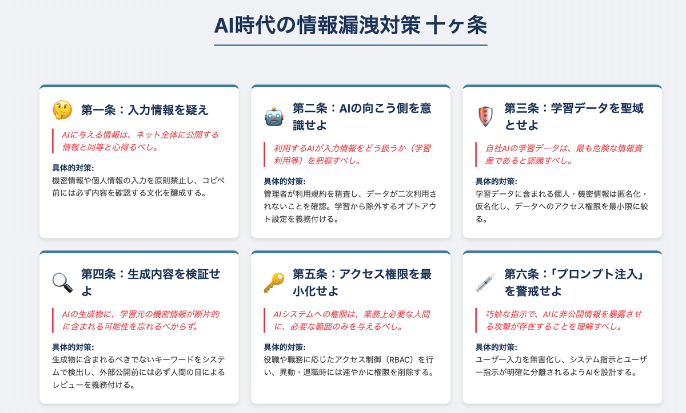
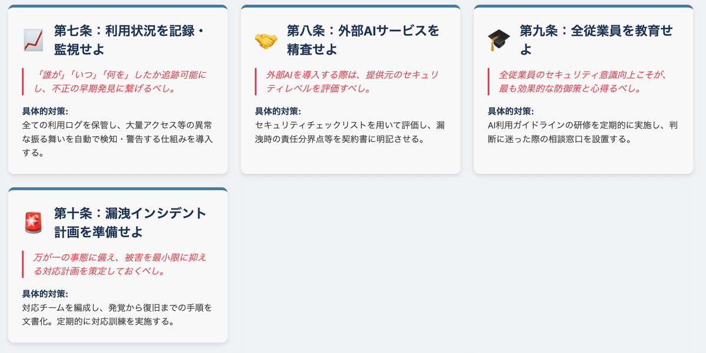

先日、燕岳へ登山に行ってきました。登山は一見シンプルに見えますが、実際には「想定外」をいかに想定して備えるかが重要です。AI時代の情報漏洩対策も、まさに登山の準備とよく似ています。
登山で学んだ「備えの大切さ」
山に登るとき、必ずしも必要になるとは限らないものを持っていきます。
例えば、レインウェア、痛み止め、ホッカイロ、そして多めの食料。実際に今回の登山でも、雨が強まり早めの撤退を決めましたが、ホッカイロが思いのほか役に立ちました。
また、登山に向けて体重を7キロ落とし、週2回皇居を2周走るトレーニングを続けたおかげで、体力面でも安心感がありました。時に人から体型を揶揄され、不快な思いをすることもありましたが、最終的には「そういう場には行かなければいい」と割り切ることができました。目標があれば努力できる――その実感は登山だけでなく、日々の生活にもつながっています。
先人の知恵と学び
これまで山に連れていってくれた諸先輩方からも、多くを学びました。
「ロストしたら登れ」「体は冷やすな」など、現場でしか得られない実践的な知識。山で怪我をしたときの講習を受けたこともあります。こうした知恵は、準備や安全の基盤となり、自分の行動を大きく変えてくれました。
AI時代の情報漏洩対策も同じ
AIのセキュリティ対策も、登山と同じです。
「必ず必要になるかは分からないけれど、想定して備えておく」ことが重要です。入力する情報の取り扱い方、社外秘や機密情報の分類、そして不用意に公開領域に載せない習慣。こうした基本をまず心得として持つことが出発点になります。
さらに、専門家に頼ることも欠かせません。登山でガイドや先輩に教わるのと同じように、セキュリティに関しても経験者・専門家の知見を借りることが、事故を防ぐ一番の近道です。私自身も仲間内でセキュリティについて議論を交わし、知識を更新しています。
まとめ
登山もAIも、「準備がすべて」と言っても過言ではありません。
無駄に思える準備が、いざというとき自分や仲間を守る命綱になります。情報漏洩という「遭難」を避けるために、日頃から心構えと知識を持ち、必要であれば専門家に相談する。その積み重ねが、安心してAIを活用できる未来を作っていくのだと感じています。

